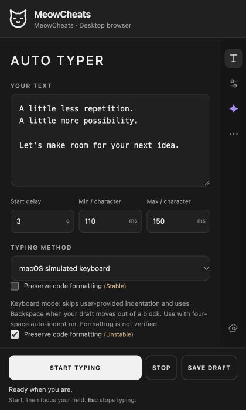

Type without pasting.
Add your code once. The Mac helper types it into your selected field using keyboard input, even where clipboard paste is blocked.
LESS TYPING. MORE Vibe coding.
When websites block paste or demand fullscreen,
MeowCheats has you covered—with Mac typing,
browser controls, and Gemini in one place.

01 / TRY IT
A quick preview of how your text arrives.
Add a few lines, pick a speed, and press play. This preview types only on this page.
Typing speed Standard
No extension needed for this preview.
02 / FEATURES
Built for the moments when the browser
gets in your way.
Add your code once. The Mac helper types it into your selected field using keyboard input, even where clipboard paste is blocked.
Choose which sites stay active when you switch tabs. Filters common tab-switch signals; availability varies by site.
Choose a countdown and typing speed. Click your destination before typing starts.
Block fullscreen requests and stop sites locking your cursor. Turn each option on per site; some pages need these features to work.
Two formatting modes help with indentation. Stable corrects spacing; Unstable checks the result in supported editors. Always review your code.
Chat with Gemini in the panel and upload a screenshot of the page after reviewing it. Your typing draft is never sent automatically.
MAKE TIME FOR THE ACTUAL WORK.
Let us handle it for you.
03 / SETUP
You’ll need a Mac with Chrome or Edge.
Open Terminal on your Mac, paste this command, and press Return.
git clone https://github.com/aarushsharmawork/Project_Meow_Cheats.gitOpen chrome://extensions (or edge://extensions). Turn on Developer mode, click Load unpacked, and choose v3 inside the downloaded Project_Meow_Cheats folder.
In Finder, open the downloaded folder and double-click native/install.command. Open Keyboard helper in MeowCheats to allow access.
Click Request macOS keyboard permission. In System Settings → Privacy & Security → Accessibility, enable MeowCheats Keyboard and your browser if asked. Return to MeowCheats and click Check keyboard helper.
Open MeowCheats before entering the test or IDE. Some features may not work in fullscreen. If a site forces fullscreen, use the minimise button to leave it—not Esc button.
Add your code and choose macOS simulated keyboard. Click Start typing, then click the destination field before the countdown ends.
GOOD TO KNOW
Yes, in fields that accept keyboard input. The Mac helper types instead of pasting. Some sites or editors may still reject it, and read-only fields stay read-only.
You can keep a tab active, block fullscreen requests, prevent cursor locking, and reduce idle mouse tracking. Choose the settings for each site. They cannot stop all tracking or make a site think it is in fullscreen.
No. This local website is an introduction and a typing demo. It does not install the extension or request browser permissions. The demo text stays in the page and is cleared when you reload.
The main keyboard workflow is made for macOS and desktop Chrome or Edge, version 116 or newer. The website works on a phone, but the native keyboard helper requires a Mac. Safari is not supported by the current package.
READY WHEN YOU ARE.